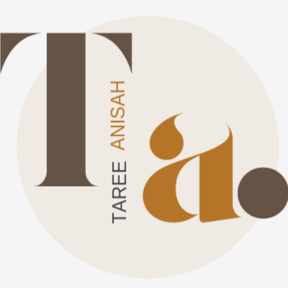
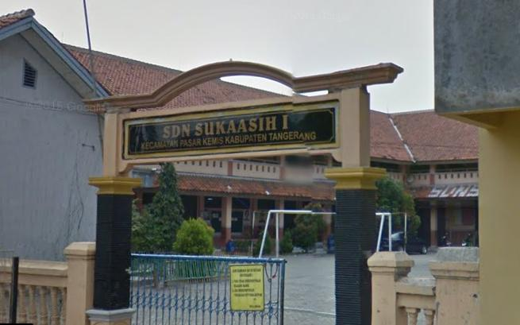
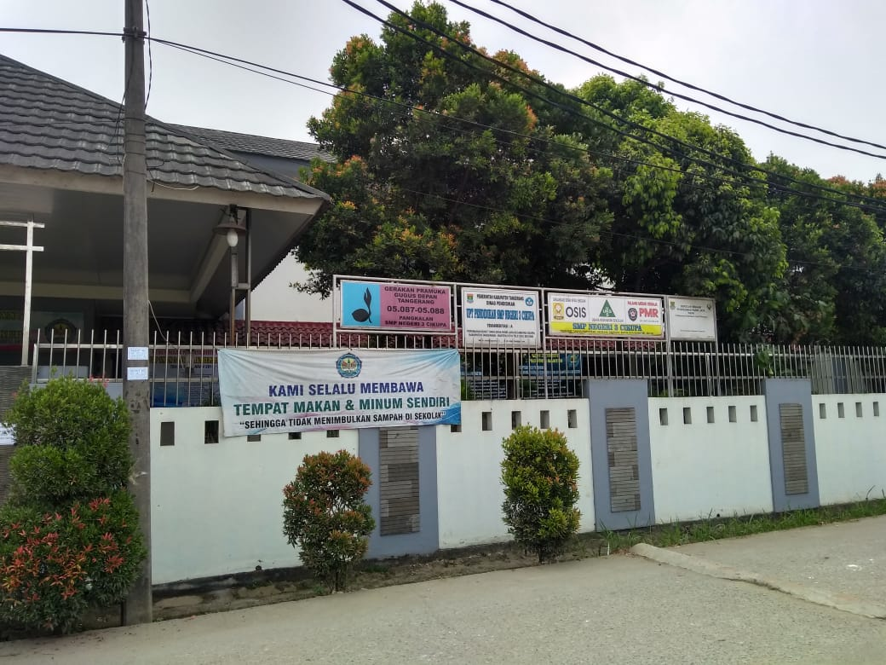
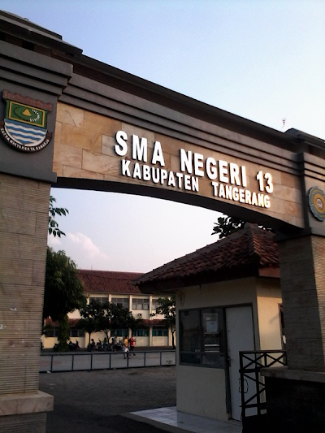
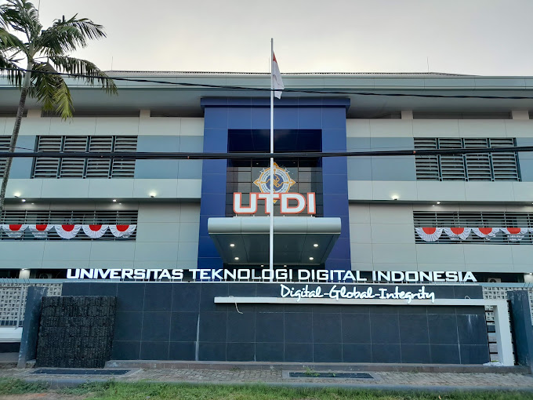

About

My name is Taree Anisah Herdanawati, but people usually call me Rere.
That's just a nickname at home, but at school, I'm usually called Tare, even though my name has double "e" letters.
But please don't pronounce it in English because it has a different meaning and the way to call me changes to Tari.
Or sometimes people also call me Tere. I was born in Jakarta on June 20th, 2003. I was born as the first daughter of two siblings.
Yes, I do have a younger sister who is 8 years younger than me.
At home, there are four of us, namely Father, Mother, and younger sister.
I live in a simple but relatively comfortable family. I have been living in that house since 1st grade of elementary school because from
the age of 3 until I graduated from kindergarten, I lived with my maternal grandmother in Jakarta. When I was little, I never actually lived
under the same roof for a long time. My father works as a private employee in the Pasar Kemis area, Tangerang Regency, and then bought
the house we currently live in. My mother used to work as a nurse in one of the hospitals in East Jakarta. Initially, we lived together in a simple
rented house in the Ciputat area, South Tangerang. However, because my father worked in Tangerang and my mother in Ciputat, and there was no one to
take care of me, I was entrusted to my grandmother. That's why I attended kindergarten near our house in Duren Sawit, East Jakarta. We only met during holidays,
like on Friday afternoons when I was picked up and we went home to the rented house, but on Sunday afternoons, I was returned to my grandmother's house. In a month,
we only met 2-3 times. This continued until I graduated from kindergarten, and then we decided to reunite at the house in the Pasar Kemis area when I entered 1st grade
of elementary school, and my mother also decided to quit her job as a nurse to take care of me fully.
Interest
My hobby is listening to music, singing, dancing, watching, reading, and editing videos. My music genre is mixed, something that is pleasant to listen to and suitable
for the situation and conditions I'm in. When it comes to watching, I enjoy movies, Korean dramas, Thai dramas, Indonesian series, mainly in the genres of romance, psychopath,
comedy, and horror. Besides that, my current reading hobby revolves around books on mental health, ways to improve a peaceful and calm life, how to deal with problems that come
our way, and more. As for my video editing hobby, I usually edit using the CapCut application, specifically for creating JJ (trendy) videos. Oh, I also love the sky, especially
the morning and evening sky (you can say I'm a sunrise and sunset hunter).
Academy
Alhamdulillah, my education has been going very smoothly. From elementary school to high school, I studied in public schools, but when I entered college, I switched to a private university.
Let's read about my academic education from elementary school to college.
Elementary School

My elementary school is called SD Negeri Sukaasih 1, located on Jl. Raya Pasar Kemis, Kab. Tangerang, Banten. My school is nicknamed "Kali Mambu (Kali Bau)" because it is close to a large river that
serves as a waste disposal site, causing an unpleasant smell that is very disturbing to the nose when passing by. Therefore, the local residents gave this nickname to my school. However, my school is
well-known as the most favorite school in the district. This is because many alumni from my school go on to attend junior high school in the city and often send their students to participate in provincial-level
competitions. During my time in school, my activities mainly involved studying and participating in extracurricular activities such as the "Dokter Cilik" (Young Doctor) program and the Marching Band.
Sometimes, I was also chosen to be the gymnastics inspector every Saturday morning at school. I also held positions in the class organizational structure from 4th to 6th grade, serving as the Secretary and Treasurer.
Junior High School

I went to SMP Negeri 03 Cikupa, which is located in Bukti Tiara Housing Complex. My school is commonly referred to as "Netig" or "Negeri 3" because the public junior high school has three branches, so the locals call
it by those names. My school is also quite famous for being called a "Luxurious" school, which means "Close to the Rice Field." This is because my school is located in the middle of a housing complex, and right in front
of it is a lush green rice field. However, on the other side of the rice field, there is the Cikupa toll road. You can imagine, my classmates and I lived not far from the school. Initially, during my junior high school years,
I really wanted to attend the prestigious SMP Negeri 1 Pasar Kemis, also known as "SMP 1 Pakem." Back then, the national exam scores played a crucial role in determining whether we could be accepted into the school we applied
for or not. Unfortunately, with a heavy heart, I found out that my scores were not enough to get into my desired school, so I decided to enroll in Netig instead. In the end, I was accepted calmly because my final scores in junior
high school were 8 points higher than my national exam scores. During my time in school, besides studying, I also participated in extracurricular activities such as PMR (Youth Red Cross) and PMI (Indonesian Red Cross).
I also served as the Secretary 1 in my class from 1st to 3rd grade.
I have an interesting story. When I was in junior high school, I started selling various foods from grades 1 to 3. Such as Lontong, Dadar Gulung, Martabak Mini, Donat Mini, Fruit Salad, Dimsum, Chips, TomYum, and other foods.
I also became a Reseller, selling various random products. However, I didn't just sell the food in class, but I entrusted it to school cafeteria stalls. I became a Reseller by only offering products through social media like
WhatsApp and Instagram. The profit I made wasn't much, but it was enough to add to my daily allowance. Eventually, I was able to buy the things I wanted.
Senior High School

I go to SMA Negeri 13 Kabupaten Tangerang, located in the Sindang Jaya area. This school is commonly referred to by the locals as "Sinjay" because it is located in the Sindang Jaya area. Originally, this school was named
"SMA Negeri 1 Pasar Kemis," but due to the division of different sub-districts, the school's name was changed. This school also has a nickname similar to Netig School, which is "Mewah" (Luxurious). However, this school is
surrounded by a large expanse of rice fields, located on the left and back sides of the school. Oh, this school has three majors: Language, Science, and Social Sciences. However, over time, the Language major was eliminated
due to lack of student interest. I myself come from the Science major (Mathematics and Natural Sciences). Why have I been in a major with health-related subjects since elementary school to high school? Because since kindergarten,
I have had a great ambition to become a doctor. However, the circumstances that were not possible made me switch to another field. The activities I participated in during school were quite active, including Scouts, Rohis (Islamic Spirituality),
and English Club. However, once again, in this extracurricular activity, specifically in Rohis, I became Secretary 1, and in Scouts, I served as Assistant Secretary 1. Why am I always appointed and trusted to be a Secretary?
I also participated in a competition called the APBN Olympiad in 2020. However, my progress was only up to the second selection stage. However, this high school period has deprived me of beautiful memories due to the presence of the Covid-19 virus.
It initially started as a 2-week break and turned into 2 years.
College

Currently, I am studying at one of the private universities in Yogyakarta, namely the Digital Technology University of Indonesia, which was formerly known as STMIK AKAKOM YOGYAKARTA. I entered in the 21st batch, which was during the Covid-19 pandemic.
As a result, the orientation period was conducted online. In the second semester, my campus started to hold hybrid classes (online and offline). However, we faced challenges with inadequate equipment, so in the odd semester, specifically in the third semester,
we switched to fully offline classes. I am majoring in Informatics-Bachelor's degree. It seems very different from the process I went through from elementary school to high school. Everything happened due to the circumstances and conditions that were not possible.
My activities include being a Teaching Assistant for one semester (even semester of the 22nd batch). Currently, I have been appointed as Secretary 1 in the Informatics and Computer Student Activity Unit. Additionally, I have also participated in a inter-province
competition in the field of UI/UX. However, it didn't proceed to the second stage. My college journey is still ongoing, so there aren't many stories that have happened yet.